Mt. San Antonio, also known as Mt. Baldy, is the highest peak in Los Angeles County rising just over 10,000 feet. My friends and I tried this hike a month or so ago hoping to hit the top at sunset and hike down a moonlit trail but only three out of nine of us made it to the top. The other six of us missed the turn off onto the four mile trail which kind of messed up our whole hike, hah. Anyways...
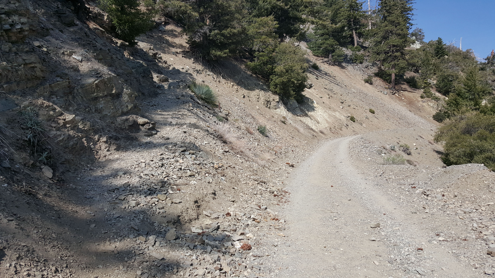For early april the conditions were really nice. Temperatures were in the 50's (F) and as usual, the California sun was out all day. The trail begins with about a mile of fire road past a small waterfall followed by about four miles and around 3,900 ft of elevation gain to the top of Baldy.

We took our time going up the mountain. At first we were averaging over 2 mph but after stopping at the ski hut and all the climbing, we slowed down to almost 1 mph...
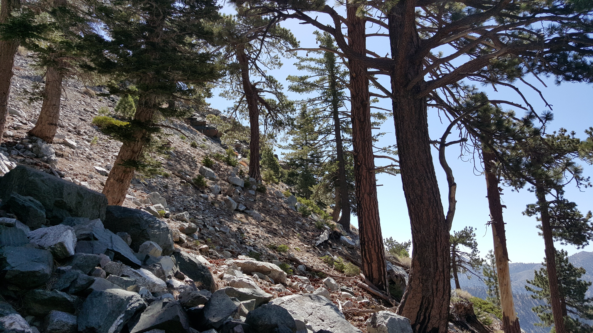I like hiking for the challenge and the exercise but I think I like it most for the chance to get away from the city. LA doesn't have much plant life.
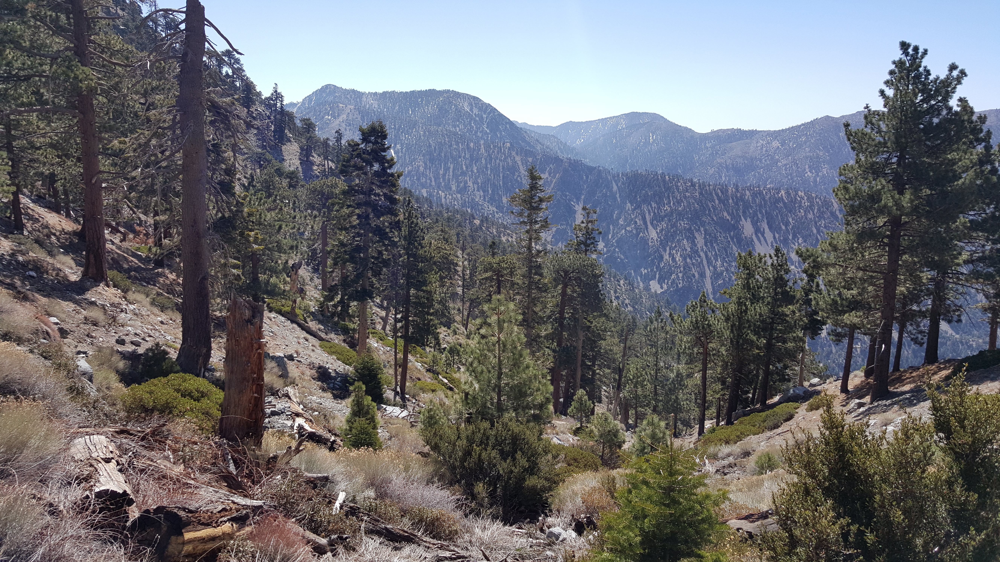Now for my favorite part of the hike! This was a wonderful surprise to find several miles in. The Sierra Club has a ski hut where people can come in the winter and stay for $20 per night so that they can hike up and ski the bowls. A woman there told us it was built in the first half of the 20th century. Single women in those days weren't allowed to sleep in the same room as men so they had to stay in the closet that now houses gear. I believe it was called the harem.


We chowed down on some snacks and refilled out water supply with fresh mountain water from the hut. While snacking I met a friendly pup named Mika who looked like a mix of my Jovey and a pitbull. It was amazing how similar she looked but considerably smaller. After meeting the owner we found out that she works at Boeing! Small world.
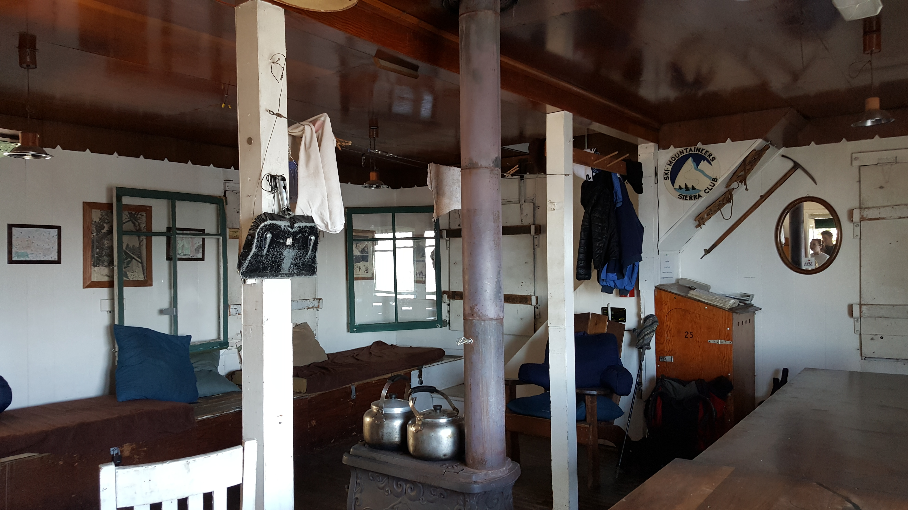Garrett, my friend who came all the way from San Diego to join us on the hike, was giddy with excitement. He hopes to stay at the hut and ski with one of our friends from school sometime.
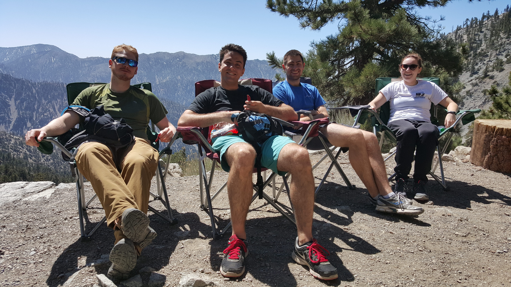We were somewhat close to losing the trail but only at one point really. The rocks became so thick that it became difficult to pick out a particular trail but we found our way easy enough to the next part of the trail.


We saw a lot of twisted trees so Kevin decided to take a photo in one. Lauren also needed to throw her snowball as her annual winter experience. We continued on through the final leg of our journey to the summit. The trail was still incredibly steep at this point so we were pretty slow going.
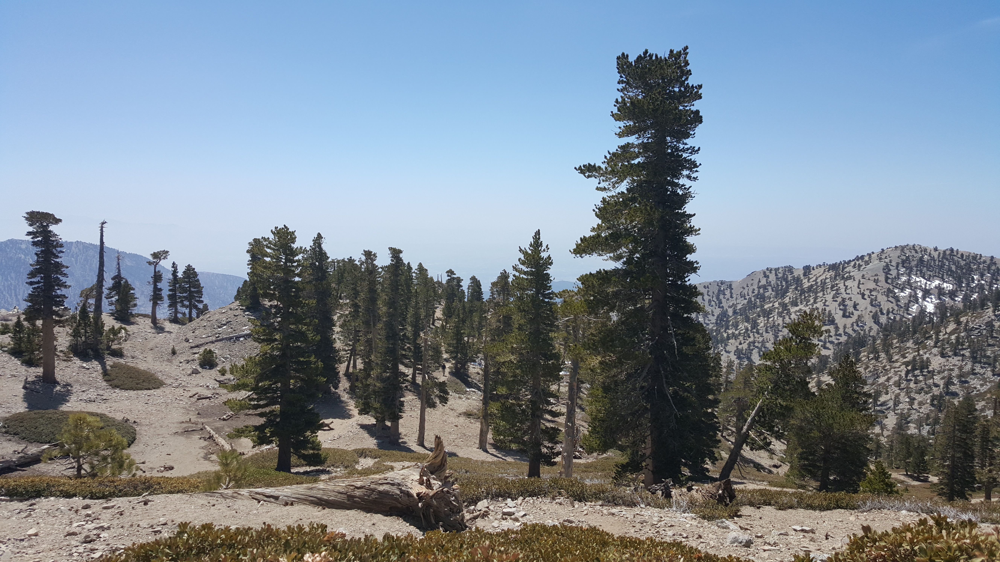We followed an older man up the majority of the trail after almost losing the trail that one time. He gave us a lot of helpful tips along the way concerning the trail since you can pretty much go whichever way you want.
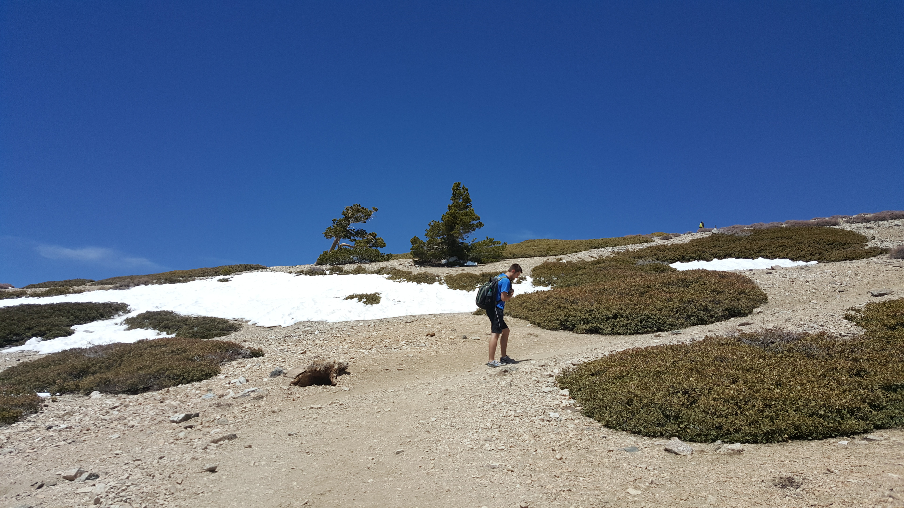While this hike was pretty difficult for us despite being active young 20-somethings, it wasn't as bad as Mt. Wilson. Some say Wilson is easier because the elevation is less. I would say I felt the elevation a little after 9,000 ft. but since I only drank 1 liter of water throughout the entire hike (11 miles), there is also a good chance I was just dehydrated. I'm bad at drinking water =/ Anyways, matbe I was more prepared for this one but I think it was easier than Wilson. There were two 76 year old men who did the hike that day. Mika also did it... all by herself...
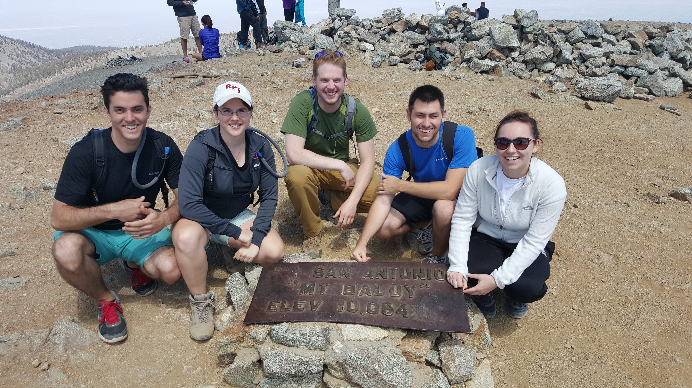Kevin and I made a small snowman at the summit to plant my Maryland flag in. The flag was a gift from my neighbors back home. I carry it with me to the top of every mountain.
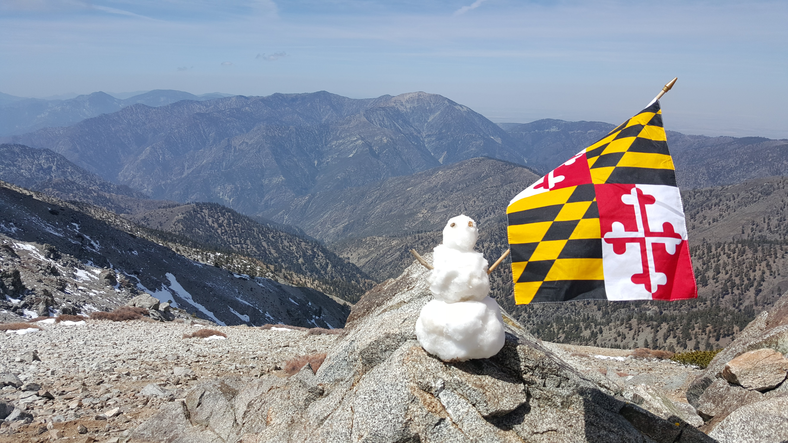There were a ton of people at the top, maybe about 40. As I got my Maryland flag out I heard a voice call out from across the summit, "IS THAT A MARYLAND FLAG?!" A fellow marylander sprinted over to bring it in for a hug. He was a friendly, muscly ginger who graduated from the Naval Academy in 2010 and was stationed in San Diego.
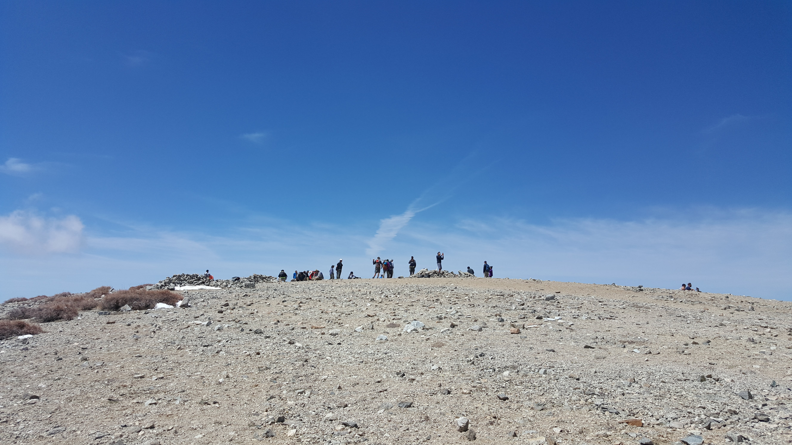
We once considered hiking Baldy but a random snow storm came in the day before so we cancelled. Greg said the trail can be pretty risky if covered in ice or snow. As you can see by the photos above, it would be tough to know exactly where the edge is with a foot or more of snow.


From the top of the mountain it was 2 miles to the top of the first chairlift we saw. Another 1.2 miles later we hit the Ski Lodge and from there it was just 3.7 more miles to the bottom. The hike down was pretty easy after we got past the backbone--it's pretty much all fire road from the top of the chairlift.
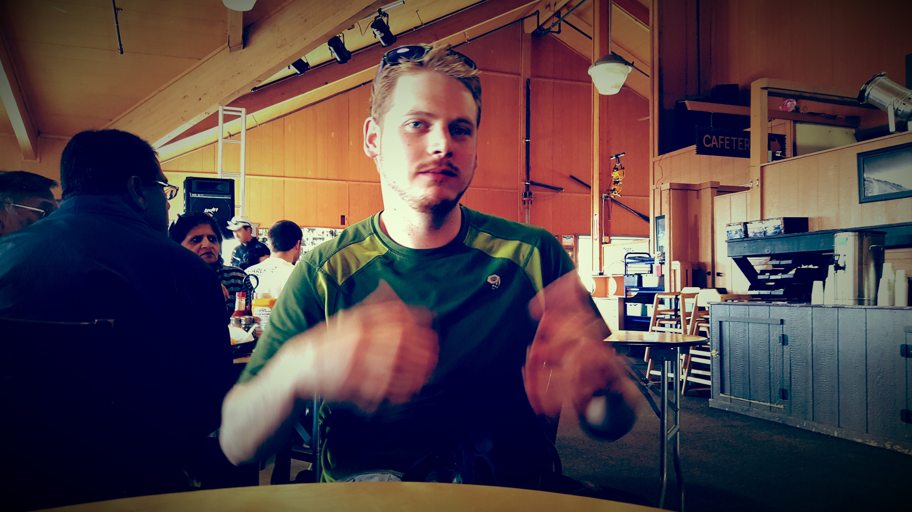The skiing area isn't much but it looks pretty decent for being so close to LA. As far as I know, they don't make any snow; it's o' natural. If you want to get to the top the easy way, you can take the chairlift up to the ski lodge and hike the 3.2 miles to the top. The Ski Lodge isn't a bad place for a meal or a beer either.
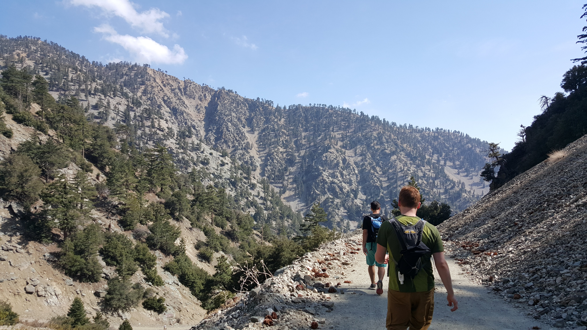We realized it was about time for us to get to the bottom of the mountain so rather than sauntering down we all walked in a line and, indian run style, had the last person in line run to the front. We made it down from the ski lodge in about an hour.

Details & Itinerary
Elevation Gain: 3,900 ft
Distance: 10.2 mi. round trip (from the parking lot); ~7 hr.
Notes: some scrambling required; dog friendly
Also, you'll need an adventure pass for parking. ~$5
Thanks for reading. To follow my training for Whitney, check out my post about the SoCal Six Pack. Happy trails!